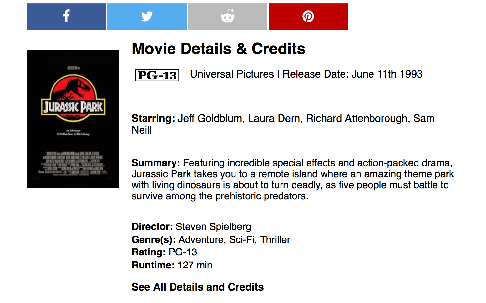

BetaCritic
Single-Page Movie Review Application

BetaCritic provided me with the opportunity to work on a distributed team of four software engineers. Our primary goal was to recreate MetaCritic, with a focus on front end design. I created a dynamically-rendering application that included film credits/details linked to MetaCritic endpoints. I implemented a robust test suite with Jest and Enzyme resulting in consistent application performance. The team collaborated with one another during the process of building proxy servers to host multiple components.
The tech stack I utilized for this project included React, CSS, MongoDB, Express, Node.js, and Webpack. BetaCritic was deployed via AWS Elastic Beanstalk and MongoDB Atlas.